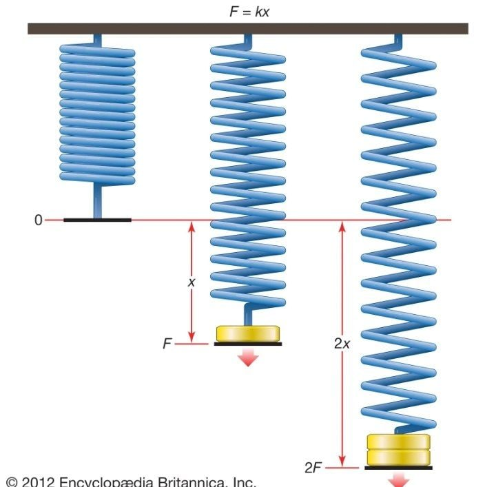

Elasicity is the property of a body by wich it experinces a change in size or shape whenevera deforming force acts on the body. when the force is removed the body returns to original and shape.most people are familiar with the stretching of a rubber band. all materials.however.have this same elastic property.but in most materials it is not so pronounced.
Elasticity is the measure of the sensitivity of one variable to another. A highly elastic variable will respond more dramatically to changes in the variable it is dependent on. The x-elasticity of y measures the fractional response of y to a fraction change in x, which can be written as.
Companies that operate in fiercely competitive industries provide goods or services that are elastic because these companies tend to be price-takers or those that must accept prevailing prices. When the price of a good or service reaches the point of elasticity, sellers and buyers quickly adjust their demand for that good or service. The opposite of elastic is inelastic. When a good or service is inelastic, sellers and buyers are not as likely to adjust their demand for a good or service when the price changes.
Elasticity is an important economic measure, particularly for the sellers of goods or services, because it indicates how much of a good or service buyers consume when the price changes. When a product is elastic, a change in price quickly results in a change in the quantity demanded. When a good is inelastic, there is little change in the quantity of demand even with the change of the good's price. The change that is observed for an elastic good is an increase in demand when the price decreases and a decrease in demand when the price increases.

There are three types of modulus of elasticity namely Young’s modulus, shear modulus and bulk modulus.
The SI unit for modulus of elasticity is Pascal
writen by